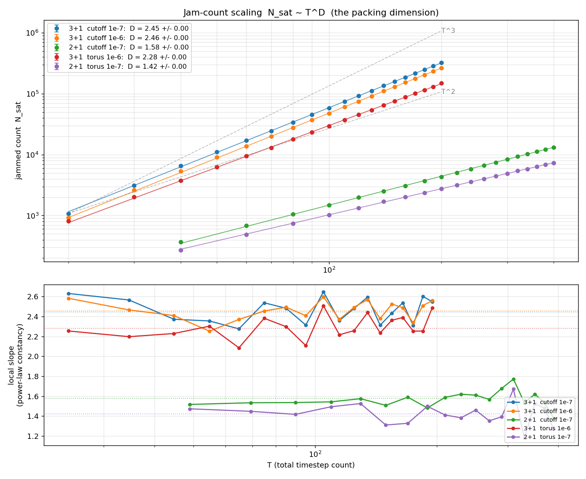
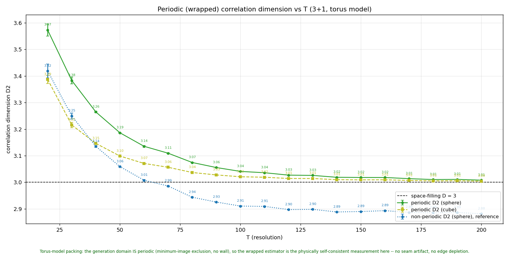
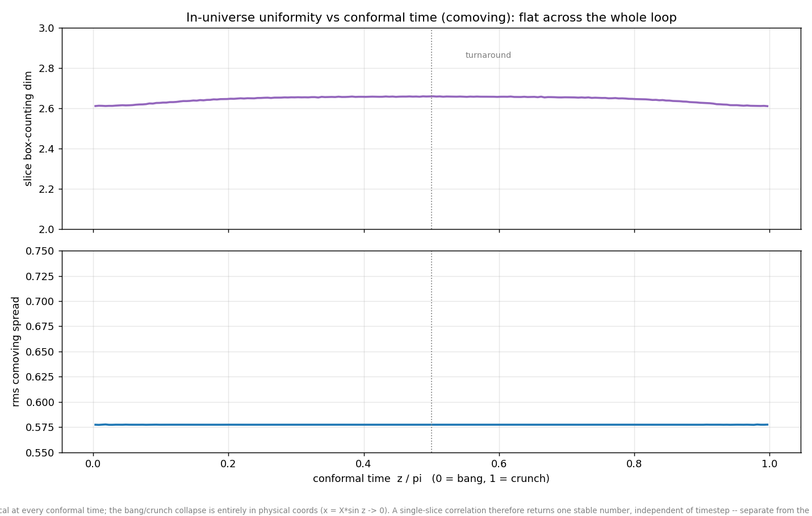
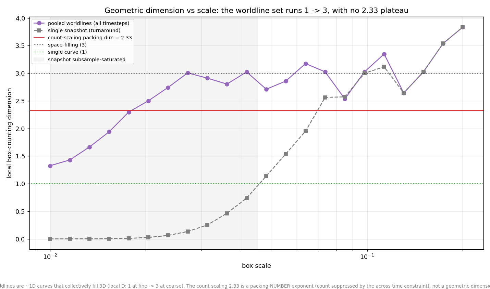
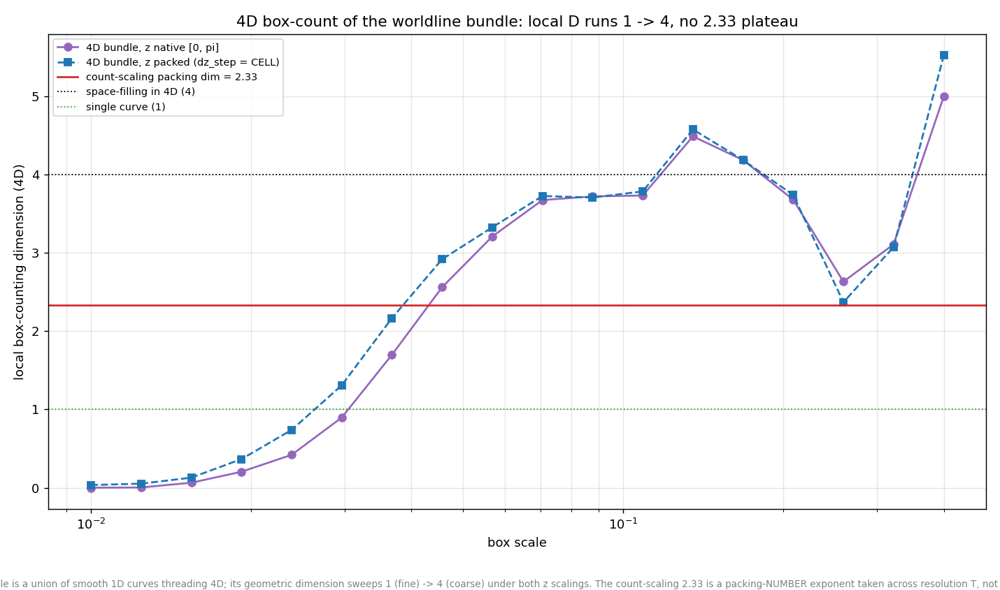

The torus model: freeing sin1 and closing the space
Engine change (--torus, both 2+1 and 3+1) · code
d642518
The model changed today. In the original (“hard-wall”) model
the slope-1 budget bound both terms jointly —
|a·b| + |a2| = 1 — and the comoving domain had
a hard wall at |X| = 1. The new model splits them: the
budget binds the wiggle term alone (|a·b| = 1), and
the sin1 amplitude becomes a free comoving offset in (−1, 1).
In comoving coordinates the sin1 term is a constant, so drawing it
uniform is exactly the homogeneous measure — and since a
full-budget wiggle plus a free offset excurses past |X| = 1,
the domain must close: comoving space becomes a period-2 torus (wrapped
positions, minimum-image exclusion, no wall). The wall and the
preferred center are not removed by hand; they become unstatable.
Two changes, one model: the old joint budget coupled a worldline’s
position to its speed (far from center ⇒ slow) and the wall piled
density against the boundary. Both structures are gone by construction.
Verified before running: non-torus binaries reproduce HEAD behavior
within the documented atomic-ordering spread, and an independent
minimum-image recheck of a jammed torus packing finds zero exclusion
violations, with the minimum pair separation sitting just above CELL.
Campaigns: torus3d_e6 (3+1, T = 20–200 step 10,
5 seeds, 1e-6 cutoff — the cutoff study showed a cutoff decade
moves D < 0.02, and it is ~10× cheaper in the tail) and
torus2d (2+1, T = 40–400 step 20, 8 seeds, 1e-7).
Each is compared against the same-cutoff hard-wall dataset.
The direct packing dimension — the slope of log N_sat vs log T
— measured on the new model, beside all three hard-wall baselines
(which reproduce yesterday’s values exactly after recollecting the
data from the fleet workspaces):
3+1: D = 2.28 full ladder / 2.33 for T ≥ 100
(hard-wall at the same 1e-6 cutoff: 2.46 / 2.47)
2+1: D = 1.42 full ladder / 1.42 for T ≥ 100
(hard-wall at the same 1e-7 cutoff: 1.58 / 1.58)

Jam count N_sat vs total resolution T (log-log): torus model (red,
purple) beside the hard-wall baselines (blue, orange, green), with
T²/T³ guides. Lower panel: local slope — flat for
both torus datasets, confirming clean power laws.
The exponent dropped by ~0.15 in both dimensions. The
mechanism reads off the model change: under the joint budget, a
worldline could buy a small wiggle by sitting far out (|a2|
large ⇒ swing 1 − |a2| small), and those
small-footprint worldlines padded the count. On the torus every
worldline carries the full unit swing — there are no cheap
wall-huggers — so the jam admits fewer objects and grows more
slowly with resolution. Same-size shifts in 2+1 and 3+1 (−0.16,
−0.14 at high T) suggest the drop is a property of the budget
change, not of the embedding dimension.
Caveat: the 3+1 torus local slope still drifts gently
upward at the top of the ladder (2.26 low-T half vs 2.32 high-T half,
scatter 0.11 vs the hard-wall’s 0.09), so the converged 3+1 value
may sit nearer 2.33 than 2.28; the 2+1 fit is flat. A T > 200 run on
the 3090 would pin it.
Homogeneity is exact: D2 = 3.00, rms spread = √⅓, flat over the whole loop
Same torus dumps; wrapped estimator now on genuinely periodic data
· code
0e12833
Yesterday’s boundary investigation ended with a promise: the
wrapped (minimum-image) correlation estimator was “a preview for
a future genuinely periodic space.” That space exists now, and on
it the wrapped estimator is the physically self-consistent measurement
— no wall, no seam, no edge depletion.

Wrapped correlation D2 vs T (3+1 torus, seed-averaged): sphere
3.008 and cube 3.004 at T = 200, descending onto the space-filling
D = 3 line with the probe-shape gap collapsed. The non-periodic
estimator on the same data reads ~2.89 — the boundary artifact,
reproduced on demand.

In-universe uniformity over conformal time (T = 200, 5 seeds): rms
comoving spread is 0.5774 across the entire loop (range
0.0004) — √⅓ ≈ 0.57735 is the exact value
for a uniform torus. The old model’s endpoint deviations are
gone.
The matter slices of the torus model are exactly homogeneous,
at every conformal time. The uniform-sin1 measure makes this
true of the proposal distribution by construction; the
measurement shows jamming preserves it (exclusion thins the cloud
without structuring it at these scales). Together with the count
result, the picture is now clean: geometry is featureless
(D2 = 3.00, no center, no wall), and all the nontrivial structure of
the model lives in the packing-number exponent — the
dynamical cost of threading worldlines through every timestep at once.
The old 2.79 was the hard-wall model’s boundary structure talking,
not the packing.
Spacetime box-counts: no plateau at the count exponent — and a dust-fine bundle
3D + 4D box-counts of the torus worldline bundle (T = 200, 3 seeds)
· code
bc28c1f

Pooled 3D box-count of the torus bundle: local D runs 1.3 → 2.9
with scale, crossing the torus count exponent (2.33, red) only in
passing — the same non-plateau as the hard-wall model.

Full 4D box-count (time as a spatial axis, native and cell-packed z
scalings): the sweep crosses 2.33 in passing with no plateau;
cell-scale occupancy is 0.75% of 4D cells.
The cross-dimensional conclusion from yesterday survives the model
change: the count-scaling exponent is a packing-number
exponent, not the geometric dimension of any static cloud — on
the torus the bundle sweeps 1 → 3 (3D) and → 4 (4D) with no
plateau at 2.33.
One new feature: at the finest scale the 4D local dimension drops to
~0 (the old model read ~1 there). This is real model physics, not an
artifact: torus worldlines carry the full unit swing, and the comoving
frame magnifies motion by 1/sin z near the endpoints, so consecutive
timestep samples of one worldline separate beyond the cell scale —
at that resolution the sampled bundle reads as dust rather than as
connected curves. The old model’s position–speed coupling
kept wall-adjacent worldlines slow enough to resolve as curves.